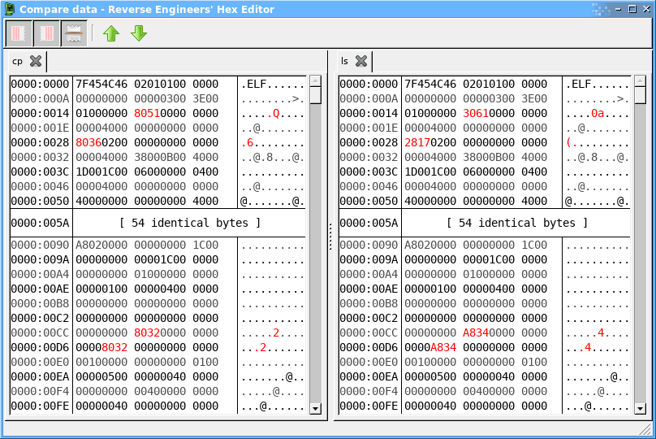

Comparing Files
The Compare data function allows you to two or more files, or sections of files to see where they differ, as shown by the screenshot comparing the start of two ELF executables below:

The bytes highlighted in red differ between the files, the rest are identical.
The buttons in the toolbar allow showing/hiding the offset/text columns, selecting whether long sections of identical bytes will be hidden (as shown in the screenshot) and jumping between differences.
To open the compare view, select Compare whole file... from the Edit menu (or press Ctrl+K) in the main window, or select a range of bytes to compare and use Compare selection... from the context menu (or press Ctrl+Shift+K). Do this multiple times to add more files/ranges to the comparison.
Unlike the UNIX diff utility, this tool only operates on fixed-length binary files - the common points of variable-length binary formats will not be detected.